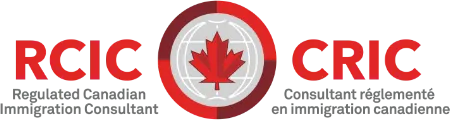

我们的使命
AddPlus 的使命很明确：减少信息差，让更多人能够公平地获得 可靠、清晰的移民信息和专业指导。
我们相信，许多有能力、勤奋且优秀的人，并不是因为自身能力不足 而受到限制，而是因为缺乏清晰、准确的信息。
我们的职责，就是通过专业知识、合理规划和坦诚建议弥合这一差距， 帮助客户在充分了解信息的基础上作出决定，并更有信心地向前迈进。
您的加拿大未来，从这里开始
以专业经验、诚信原则和对新移民历程的深入理解， 为您提供可靠的加拿大移民服务与指导。
关于 ADDPLUS
AddPlus Immigration Solutions Inc. 是一家位于加拿大的 专业移民咨询公司，致力于为客户提供高质量、 合乎职业规范并以客户需求为中心的移民服务。
我们的服务涵盖学习许可、工作许可、永久居民申请路径， 以及涉及加拿大移民、难民及公民部（IRCC）和 加拿大移民及难民委员会（IRB）的相关移民事务。
AddPlus 的优势不仅在于专业知识和实务经验， 更在于我们真正理解新移民在加拿大安家与发展的历程。
专业经验
由经验丰富的移民专业人士为您提供清晰、诚信且可靠的专业服务。

我们的移民顾问均持有相关专业执照并获得授权， 并在适用情况下具备 IRB 案件代理经验。
我们的团队拥有超过 20 年的综合经验，长期协助个人和家庭 在加拿大学习、工作并实现移民目标。
我们曾为国际学生、技术工作者、家庭以及来自不同背景的 新移民提供服务，并以清晰、专业和负责任的方式 协助客户应对复杂的移民申请流程。
我们的故事
AddPlus 的创始团队多年来一直在加拿大的非营利机构和 社区服务机构中直接为新移民提供支持。
在创立 AddPlus 之前，他们通过安置服务、社会服务项目 以及一线社区工作，为移民和难民提供长期支持。
这些经历让我们看到的不只是申请表格和材料本身。 我们理解新移民在陌生制度中寻找方向、适应生活， 并在新的国家建立未来时所面对的真实挑战。
我们将这种理解和视角带入每一个客户的案件中。
AddPlus 的使命很明确：减少信息差，让更多人能够公平地获得 可靠、清晰的移民信息和专业指导。
我们相信，许多有能力、勤奋且优秀的人，并不是因为自身能力不足 而受到限制，而是因为缺乏清晰、准确的信息。
我们的职责，就是通过专业知识、合理规划和坦诚建议弥合这一差距， 帮助客户在充分了解信息的基础上作出决定，并更有信心地向前迈进。
我们坚持透明、诚信，并重视客户的长期发展与成功。
无论您是国际学生、工作人士，还是希望在加拿大建立未来的家庭， 我们都会以同样的专业态度和尊重认真对待每一个案件。
在 AddPlus，我们认为移民咨询不仅是一项服务， 更是一份责任。
为什么选择我们
基于专业经验、透明沟通以及对每位客户具体情况的理解， 为您提供切实可靠的移民建议。
由具备专业资格并获得授权的移民专业人士为您提供服务。
每个人的移民经历都不同。我们会认真了解您的具体情况、 需求和目标，并据此提供建议。
我们支持新移民的经验并不局限于文件和移民申请本身， 更来自长期的一线社区服务实践。
我们认为，客户应当清楚了解自己的选择、潜在风险、 申请要求以及下一步安排。